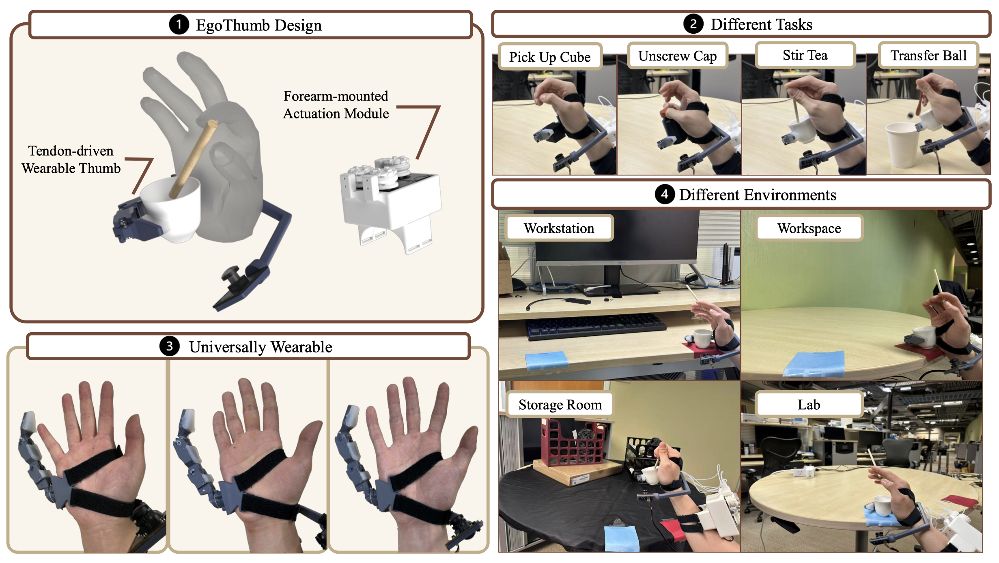
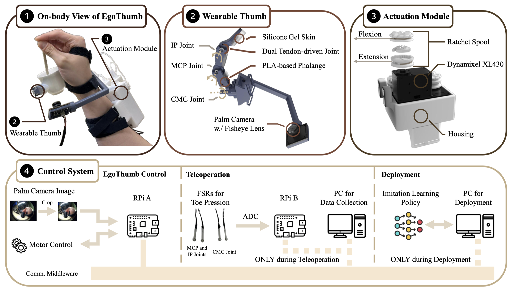
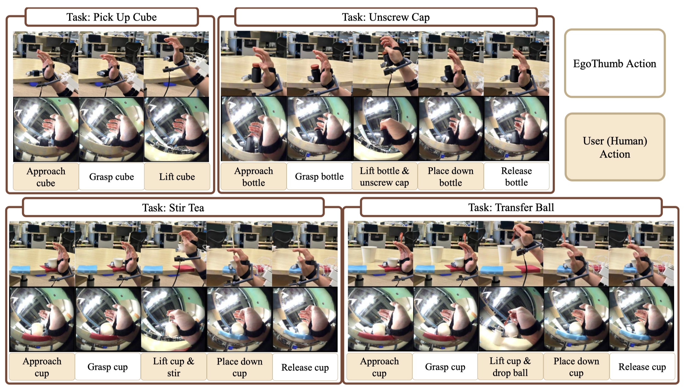
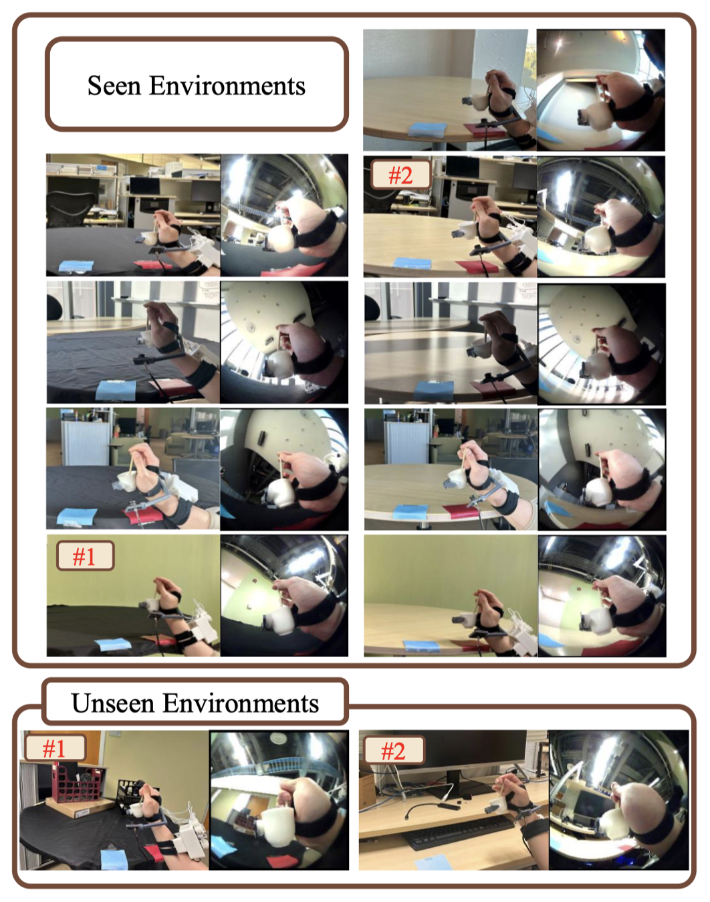
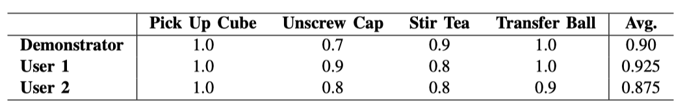
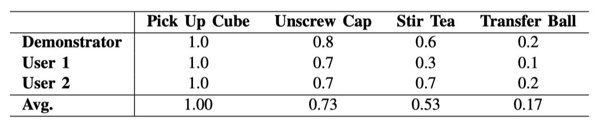
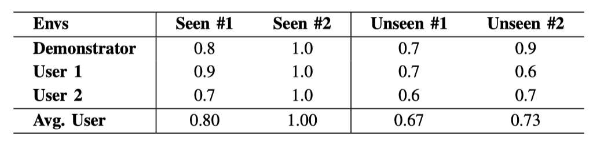
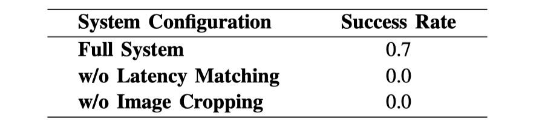
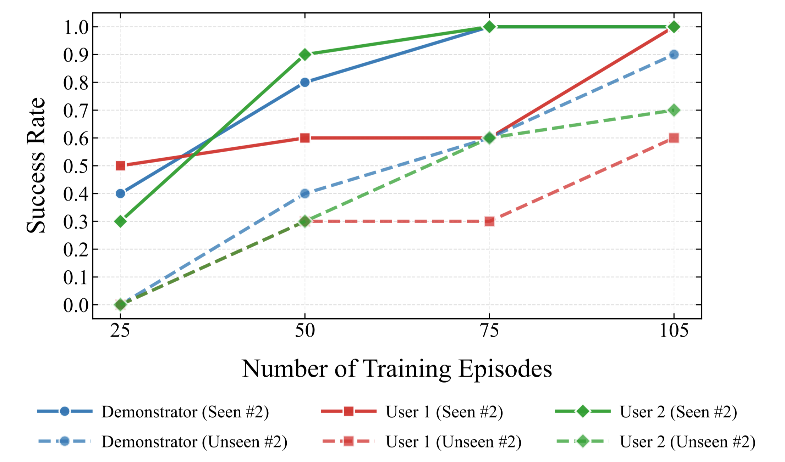

Overview of our EgoThumb System. (1) EgoThumb Design: We present a fully open-source, vision-driven supernumerary robotic thumb, featuring a compact, tendon-driven mechanism with forearm-mounted actuation. (2) Different Tasks: EgoThumb enables a single hand to independently execute complex tasks that typically require bimanual coordination. (3) Universally Wearable: The device is secured via adjustable hook-and-loop straps, ensuring seamless physical adaptation across diverse hand morphologies. (4) Different Environments: The system achieves strong generalization performance across varied, unstructured environments.
Supernumerary robotic fingers augment human dexterity by enabling a single hand to perform complex "hold-and-manipulate" tasks that typically require bimanual coordination. However, existing devices are often hindered by bulky hardware that restricts interaction with multi-scale objects and rely on explicit hand motion triggers that lack environmental context. To address these challenges, we present EgoThumb, a fully open-source, vision-driven supernumerary robotic thumb. EgoThumb features a compact, dual tendon-driven design with forearm-mounted actuation, enabling precise active joint control. The system utilizes a visual imitation learning policy that maps egocentric images from a palm-mounted camera directly to continuous joint positions. By implicitly decoding human intent from visual cues capturing both the hand and the object of interest, EgoThumb achieves robust autonomous manipulation and strong generalization across diverse users and environments. All hardware designs and software implementations will be fully open-sourced upon acceptance.

Overview of the EgoThumb System Design. 1) On-body View: The system comprises a wearable thumb and a forearm-mounted actuation module. 2) Wearable Thumb: The thumb features dual tendon-driven joints for precise control and silicone-coated PLA phalanges for stable grasping. A palm-mounted fisheye camera provides egocentric visual feedback. 3) Actuation Module: The actuation module houses three Dynamixel XL430-driven ratchet spools. This forearm-mounted configuration significantly reduces distal weight. 4) Control System: Our EgoThumb interfaces with teleoperation and deployment systems via custom communication middleware.

Execution Sequences for the Four Evaluation Tasks. Policy rollouts demonstrating collaborative human-robot manipulation across four tasks: Stir Tea, Transfer Ball, Unscrew Cap, and Pick Up Cube. For each task, the top row displays the user’s first-person view of the interaction, while the bottom row shows the corresponding egocentric palm camera view used by the policy. The timelines below outline the coordinated sequence of autonomous EgoThumb actions and human motions.

Task Area and “In-the-Wild” Environments. Top (Task Area): Darker areas represent the initial and target areas for training data, while the larger, lighter areas (including the original darker areas) represent the expanded areas used for the robustness test of object distributions. Pick Up Cube and Unscrew Cap utilize the green areas, expanded from 10 cm × 10 cm to 50 cm × 10 cm. Transfer Ball and Stir Tea use red for pick-up and blue for drop-off, expanded from 10 cm × 10 cm to 30 cm × 25 cm. For the Transfer Ball task, expanding the evaluation area shifts the target receptacle’s position (“Target Change”). Bottom (“In-the-wild” Environments): The “Seen Environments” panel displays the diverse environments included in the broadened training dataset. The “Unseen Environments” panel displays completely novel backgrounds used strictly to test out-of-distribution generalization. Labels #1 and #2 denote the specific seen and unseen test environments.

Success Rates across Different Hands. We report the performance when objects are placed within initial and target areas in the training data. EgoThumb achieves high performance across all four tasks when operated by the demonstrator, and it generalizes effectively to novel participants (User 1 and User 2).

Success Rates in Expanded Initial and Target Areas. We evaluate our system on an expanded initial and target areas compared to the training data. Results show strong robustness on Pick Up Cube and Unscrew Cap, moderate robustness on Stir Tea, and a clear drop on Transfer Ball, likely due to increased foreground visual variation and its longer-horizon manipulation requirements.

Task Success Rates Across Different Backgrounds. We evaluate our policy on two seen and two unseen environments using the Stir Tea Task. The policy maintains robust performance across both seen and entirely novel (unseen) backgrounds for all users.

Ablation Study Results. Disabling either latency matching or image cropping results in catastrophic policy failure, confirming their necessity for robust visuo-motor control.

Impact of Training Data Scale on Generalization. Scaling the demonstrations from 25 to 105 generally improves policy performance in both seen (solid lines) and unseen (dashed lines) environments across all users, showing that more data drives robust out-of-distribution generalization.